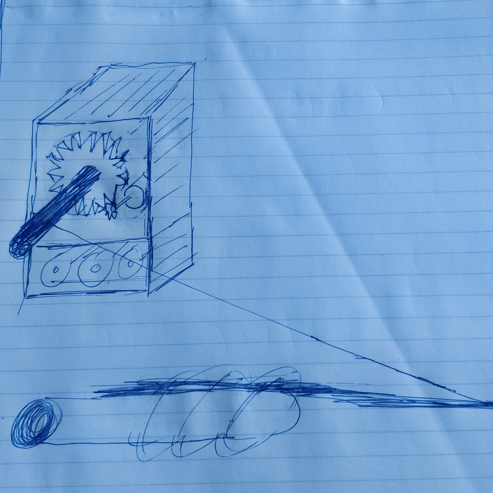
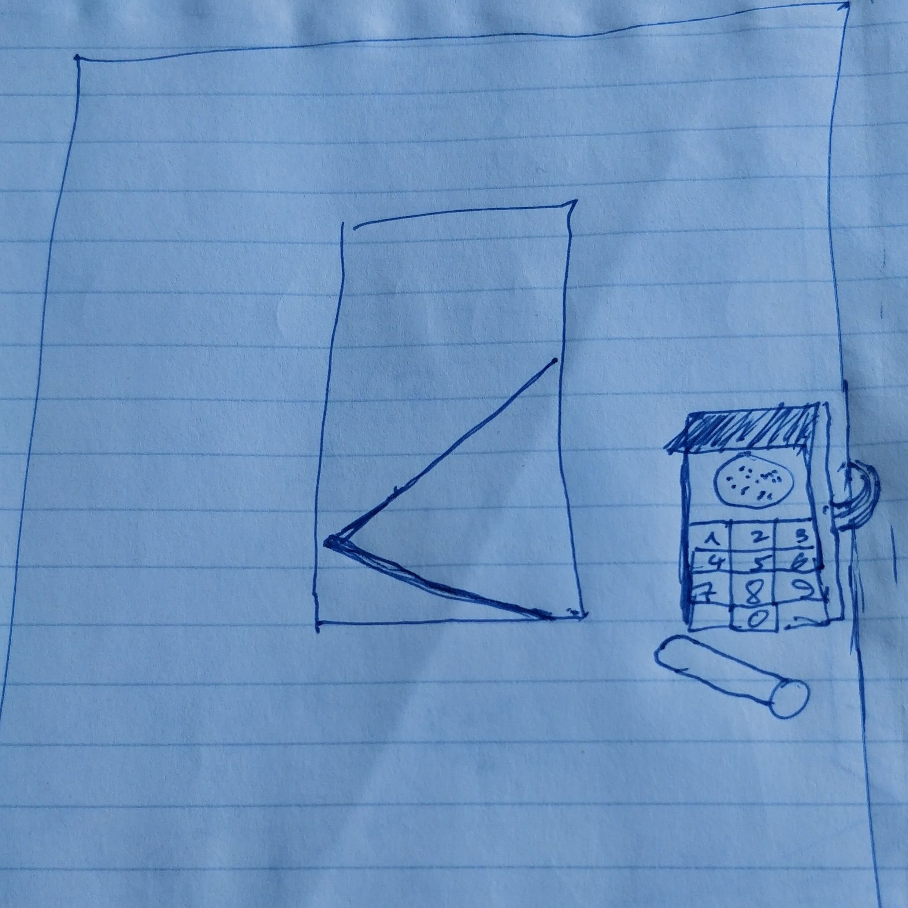

DanielMolev.com

The project was to build a mechanism to open the door to the Computer Science and Engineering room. To accomplish this, the mechanism was built using 3d printed parts which included; a lever, gear, and box to hold all the hardware components. In addition, the project called for a keypad and microcontroller to allow users to trigger the opening and closing of the door. Finally, the purpose of the project was to allow computer science and engineering students who know the pin to enter the room when the teacher was away.
 One of the constraints in the project involved the precision of the stepper motor which was in charge of lifting the lever to open and close the door. The issue was that the stepper motor would sometimes lift the lever too high, so the door wouldn’t close or sometimes not lift it high in enough, so the door wouldn’t close. Another challenge encountered was designing the proper gear size which connected the small teeth of the motor to a rotating cylinder that pulled the lever (see the sketch for more detail). The problem was that when the gear was too small the motor didn’t have enough force(torque) to lift the lever and when the gear was too big it would take too long to open the door.
The project was divided into serval phases which were accomplished in the following order; planning, gathering of materials, designing the parts for the specific materials, 3d printing costume parts, assembly, writing Arduino code, testing, adjustments, and finally extra features. The big millstones which where set and met included getting all the parts ready, building a working version, fixing any major issues after the first prototype, and finally having a fully working project.
If you would like to attempt a similar project one of the constrains that didn’t get fully resolved was precision of the motor. When the project was in designing and coding stage it was assumed that the lever would go to the exact position the code will tell it however in the real world after a number of run cycles there will be deviation. To counteract this, you could try to add a proximity sensor so that your program can rely on exact position rather then the assumed position of the lever. Another suggestion, when designing a gear, would be to start with a gear that is too big so that you have room decrease the size. If you start with a gear that’s too small, then it will take you much longer to find the proper gear size and the speed to the mechanism does not impact the usability of it.
Even with the issues of the project I believe that the main goal to have access to the classroom when the teacher is away was accomplished. For example, when the teacher was sick, us students still were able to access the room, and were able to continue working on our class projects. In addition, I set out to show my classmates that Computer Science and Engineering can have real world applications. Well, while working on the project serval students even from different disciplines came to test my door so, what I hope my project was able to do was inspire them to peruse Computer Science and Engineering. Regardless of the success of the project I feel what was most important to me was the experience I gained. What I learned from this project is that unlike in Computer Science or Math there is no exactness when it comes to hardware and design. Going forward I now know that when writing code for hardware applications I should take real world into account.